Processo de Formação da União Europeia
A União Europeia é o maior bloco econômico do mundo, resultado de um processo de integração iniciado após a 2ª Guerra Mundial, com o objetivo de garantir paz e desenvolvimento econômico.
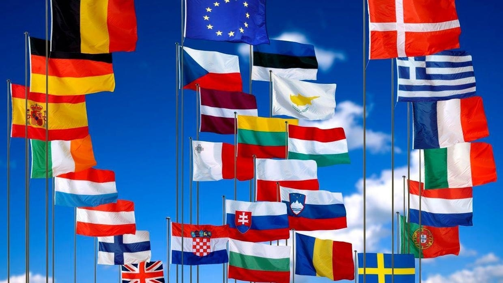
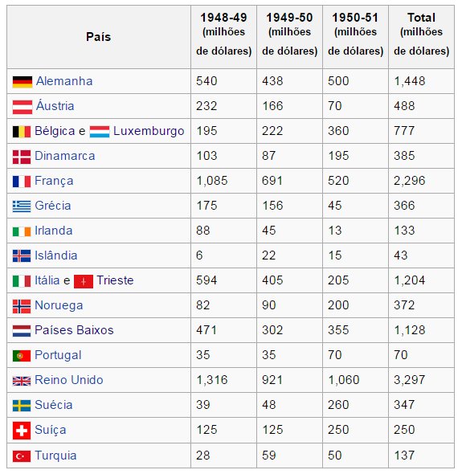
A UE possui símbolos próprios que representam a identidade supranacional do bloco:
- Bandeira: 12 estrelas douradas em círculo sobre fundo azul — representa os valores de unidade, solidariedade e harmonia.
- Hino: "Ode à Alegria" de Beethoven.
- Dia da Europa: 9 de maio.
- Lema: "Unida na diversidade".
- Moeda: Euro (€) — adotada por 20 países da Zona Euro.
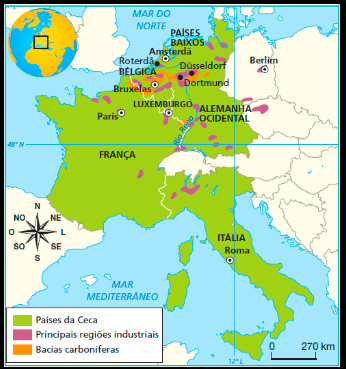
Economia Europeia e a UE
A Europa concentra os países mais desenvolvidos do mundo. A UE é o maior bloco econômico global em termos de PIB combinado.
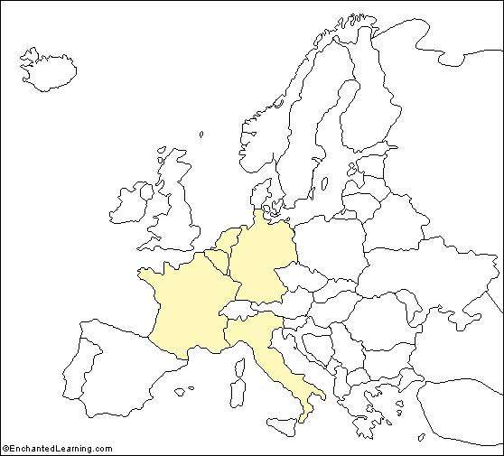
| Indicador | Detalhe |
|---|---|
| PIB da UE | ~17 trilhões de dólares (2ª maior economia do mundo) |
| Membros | 27 países (após Brexit de 2020) |
| Zona Euro | 21 países usam o Euro (Croácia entrou em 2023) |
| Zona Schengen | 27 países com livre circulação de pessoas |
| Países mais ricos | Luxemburgo, Irlanda, Dinamarca, Suécia, Países Baixos |
| Países menos desenvolvidos | Bulgária, Romênia, Hungria (Leste Europeu) |
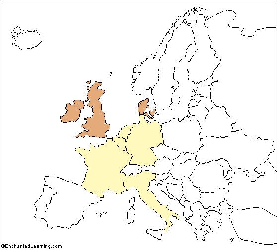
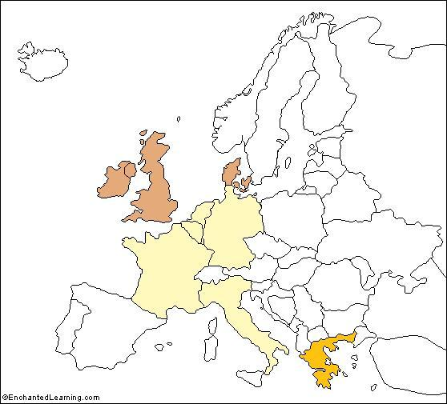
O Euro (€)
O Euro foi criado pelo Tratado de Maastricht (1992) e circula fisicamente desde 2002. É gerido pelo Banco Central Europeu (BCE), com sede em Frankfurt (Alemanha).
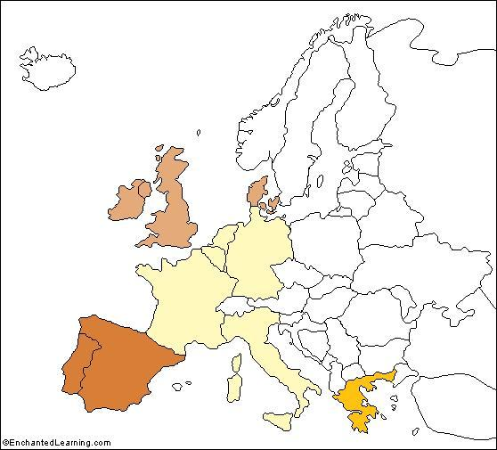
Acordo de Schengen
Criado em 1985 na cidade luxemburguesa de Schengen, elimina as fronteiras internas entre países signatários, permitindo livre circulação de pessoas sem necessidade de passaporte.
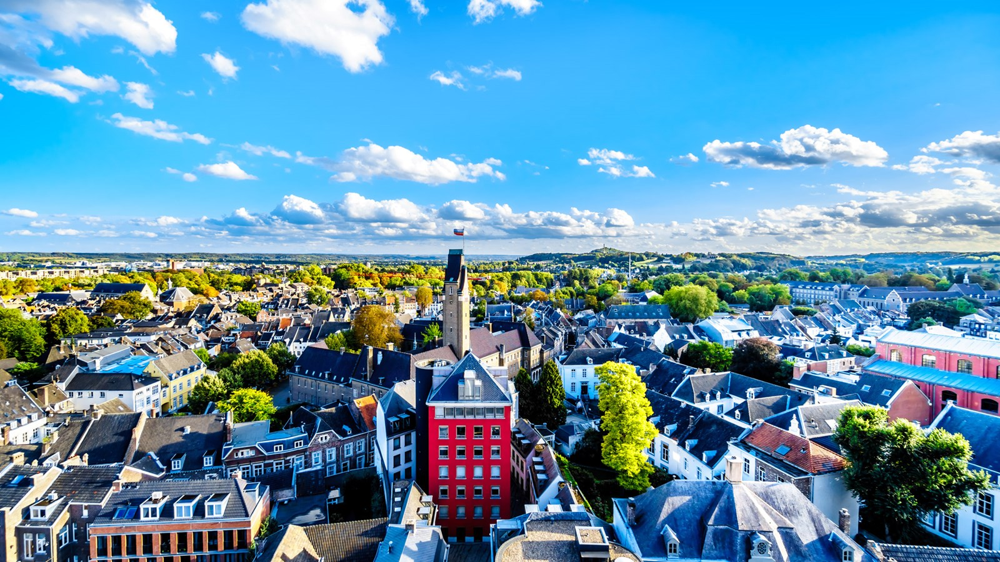
Crise de 2008
A crise financeira global afetou duramente a UE. Os países mais impactados foram Grécia, Portugal, Irlanda e Espanha, que precisaram de pacotes de resgate do FMI e BCE. A Grécia viveu a pior crise da Zona Euro.
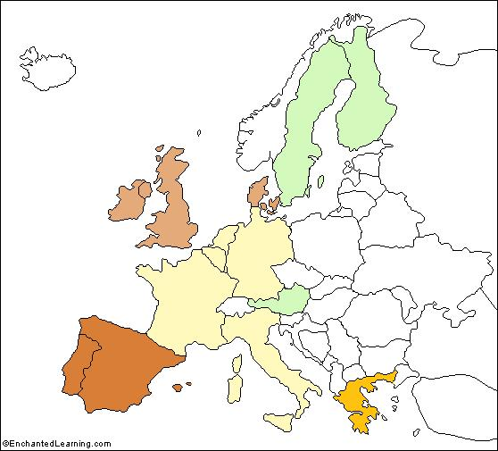
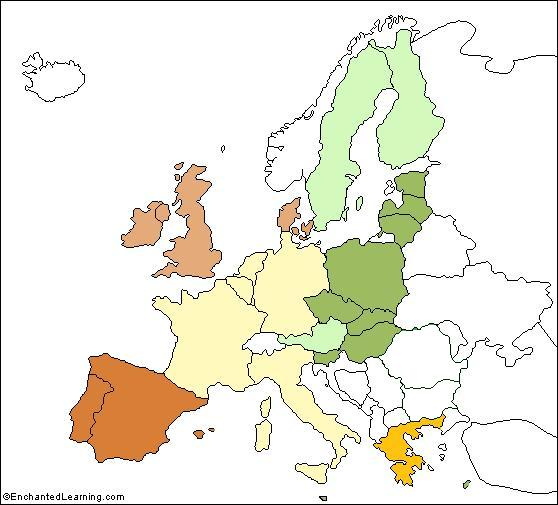
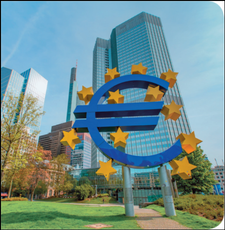
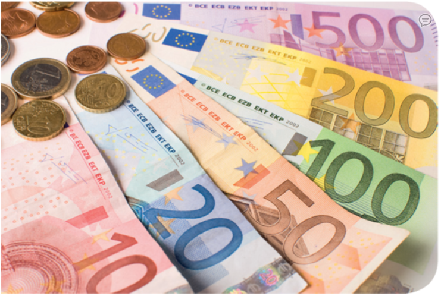
A Europa é dividida em sub-regiões geográficas:
- Europa Ocidental: França, Alemanha, Bélgica, Países Baixos, Luxemburgo, Áustria, Suíça
- Europa do Norte (Escandinávia): Noruega, Suécia, Finlândia, Dinamarca, Islândia
- Europa do Sul (Mediterrânea): Portugal, Espanha, Itália, Grécia
- Europa Oriental: Polônia, Hungria, República Tcheca, Romênia, Bulgária, países bálticos
- Europa Britânica: Reino Unido e Irlanda
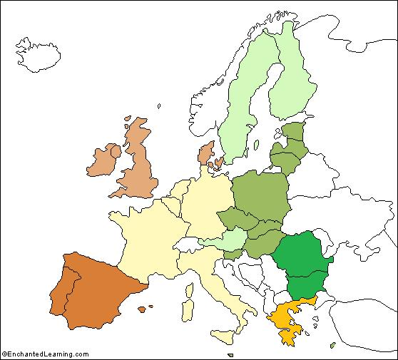
Apesar de a Europa ser um continente com 48 países e grandes diferenças de desenvolvimento, concentra as principais regiões industriais do mundo:
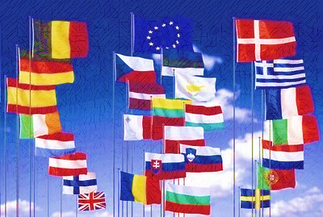
| País / Região | Principal Área Industrial |
|---|---|
| Reino Unido | Sul da ilha da Grã-Bretanha (Londres e arredores) |
| França | Região de Paris e norte-nordeste do país |
| Alemanha | Vale do Reno e região do Ruhr (maior polo industrial europeu) |
| Itália | Norte do país — Vale do Pó (Milão, Turim, Gênova) |
| Rússia | Região entre o rio Volga e os Montes Urais |
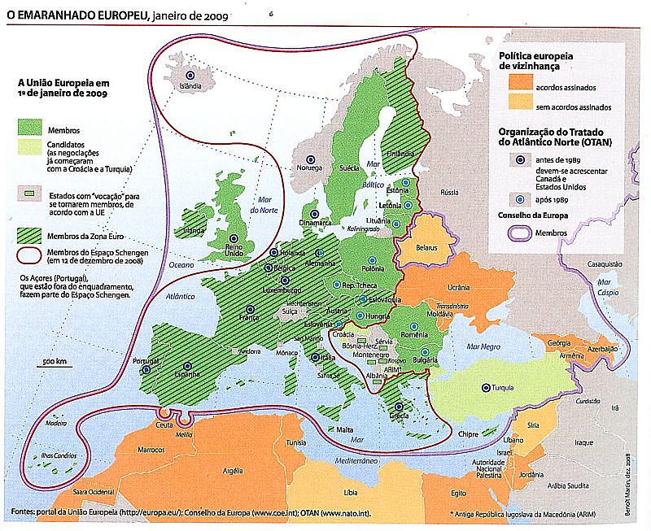
- Envelhecimento da população (menor força de trabalho)
- Custo de vida elevado e baixo crescimento econômico
- Diferenças de desenvolvimento entre países membros (Leste vs. Oeste)
- Crise econômica iniciada em 2008 → recessão, redução de exportações
- Brexit (2020): perda de um dos maiores parceiros comerciais
- Pandemia de COVID-19: agravou a recessão e a saída de imigrantes do RU
A entrada da Turquia na União Europeia é uma das questões mais polêmicas do bloco. O país candidatou-se em 1987, mas o processo de adesão permanece suspenso.
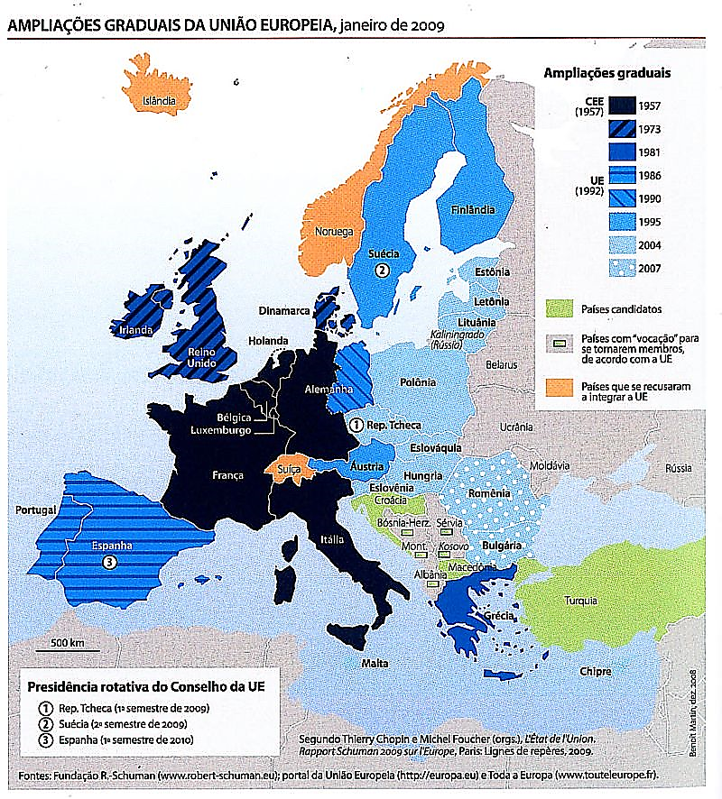
- Xenofobia de parte da população europeia em relação aos turcos
- Identidade asiática e muçulmana — a maioria do território turco fica na Ásia; população predominantemente islâmica
- Apenas uma pequena faixa de território turco fica na Europa (região de Istambul)
- Histórico de autoritarismo no governo turco (contrário aos valores democráticos da UE)
- Presença de fundamentalismo islâmico ativo
A questão energética é um dos maiores desafios da Europa contemporânea. O continente depende fortemente de importações de energia, o que gera vulnerabilidades geopolíticas.
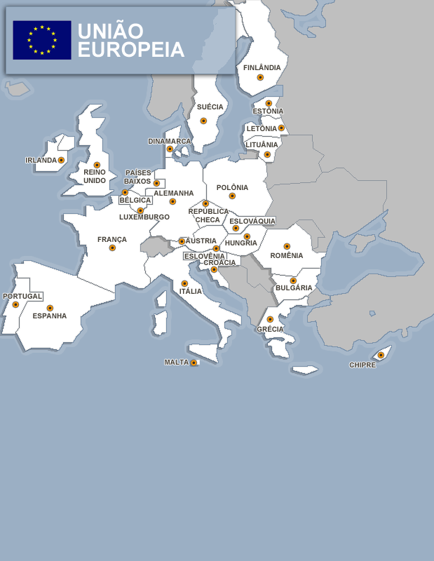
| Aspecto | Detalhe |
|---|---|
| Dependência de importações | Grande parte do gás e petróleo vinha da Rússia (gasodutos Nord Stream), gerando crise após a invasão da Ucrânia em 2022 |
| Transição energética | Esforço europeu para reduzir dependência de combustíveis fósseis |
| Fontes alternativas | Energia solar (sul da Europa) e eólica (norte e costa) em expansão acelerada |
| Energia nuclear | Em debate: França depende muito da nuclear; Alemanha desativou suas usinas; outros países divididos |
| Preocupações ambientais | Pacto Verde Europeu (Green Deal) — meta de neutralidade climática até 2050 |
Brexit
Brexit = Britain + Exit — saída do Reino Unido da União Europeia.
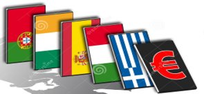
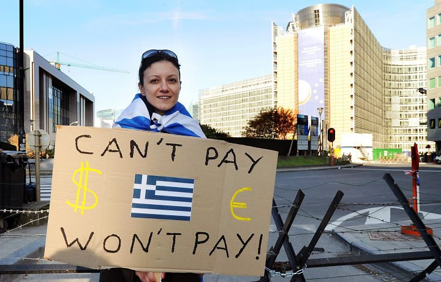
A saída do RU trouxe consequências significativas para ambos os lados:
| Aspecto | Antes (na UE) | Depois (fora da UE) |
|---|---|---|
| Circulação de pessoas | Livre (Schengen) | Necessita visto/passaporte |
| Comércio | Mercado único, sem tarifas | Acordo comercial separado |
| Moeda | Libra esterlina (nunca usou o Euro) | Libra esterlina |
| Trabalhadores EU no RU | Livre circulação | Precisam de autorização |
| Irlanda do Norte | — | Fronteira especial com República da Irlanda (ainda na UE) |
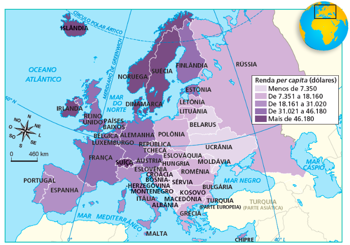
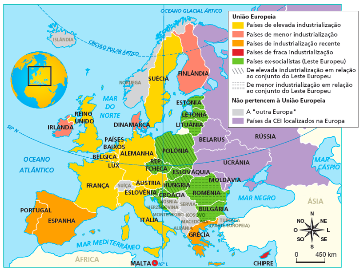
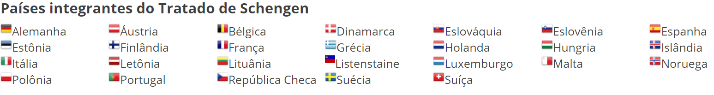
Relevo da América do Norte
O relevo da América do Norte é organizado em três grandes faixas no sentido Norte-Sul:
| Porção | Localização | Principais Elementos |
|---|---|---|
| Ocidental | Costa do Pacífico | Montanhas Rochosas (Rockies), Serra Nevada, Cascades, Monte McKinley (Denali — ponto mais alto, 6.194 m) |
| Central | Interior do continente | Grandes Planícies (prairies), Vale do Mississipi-Missouri, Planície do Canadá |
| Oriental | Costa do Atlântico | Escudo Canadense (embasamento cristalino antigo), Montes Apalaches (antigos, erodidos) |
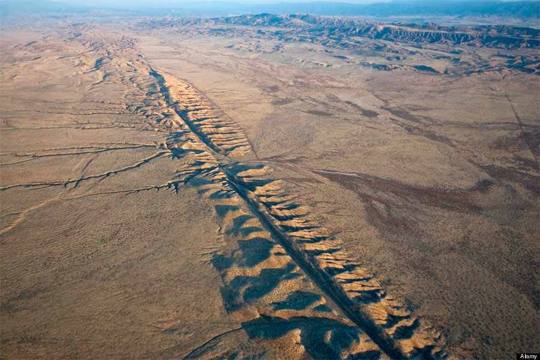
A América do Norte é composta pelos países da América Anglo-Saxônica (EUA e Canadá) e México, além dos países da América Central e Caribe. A América Anglo-Saxônica (EUA + Canadá) é o foco desta unidade.
Clima e Vegetação da América do Norte
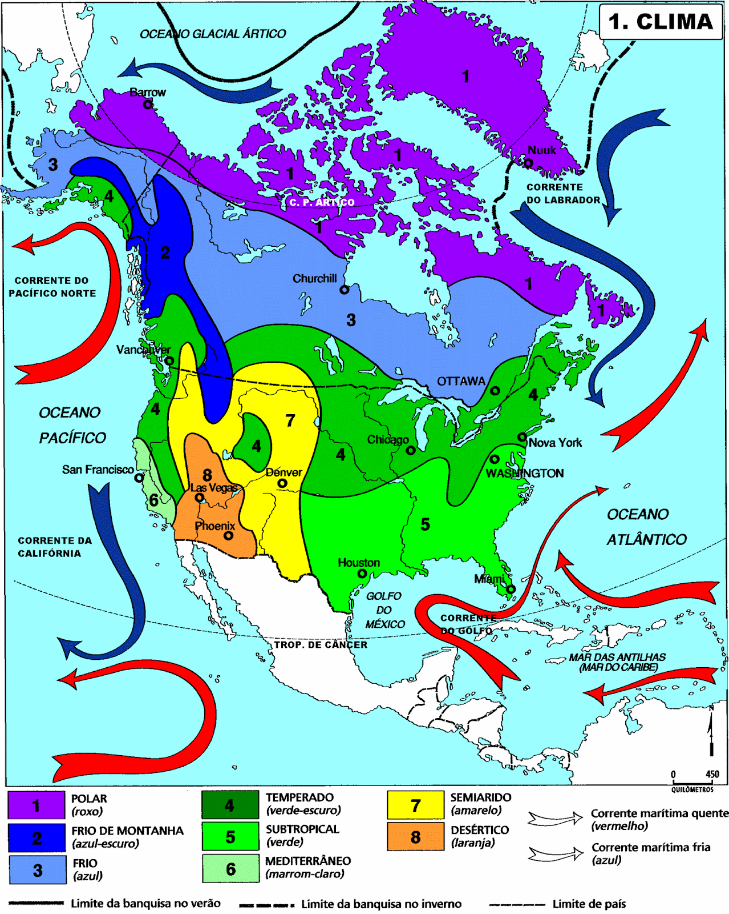
| Clima | Vegetação Associada | Localização |
|---|---|---|
| Polar / Subpolar | Tundra (musgos, liquens) | Norte do Canadá, Alasca |
| Temperado Frio (Continental Úmido) | Floresta de Coníferas (Taiga) | Sul do Canadá, norte dos EUA |
| Temperado Continental | Pradarias (gramíneas) | Centro dos EUA e Canadá |
| Temperado Oceânico | Floresta Temperada | Costa Noroeste (Oregon, Washington) |
| Semiárido | Estepes (vegetação baixa, xerófita) | Centro-oeste dos EUA |
| Mediterrâneo | Vegetação de Maquis (Chaparral) | Califórnia |
| Subtropical | Floresta Subtropical | Sul dos EUA (Flórida, Golfo do México) |
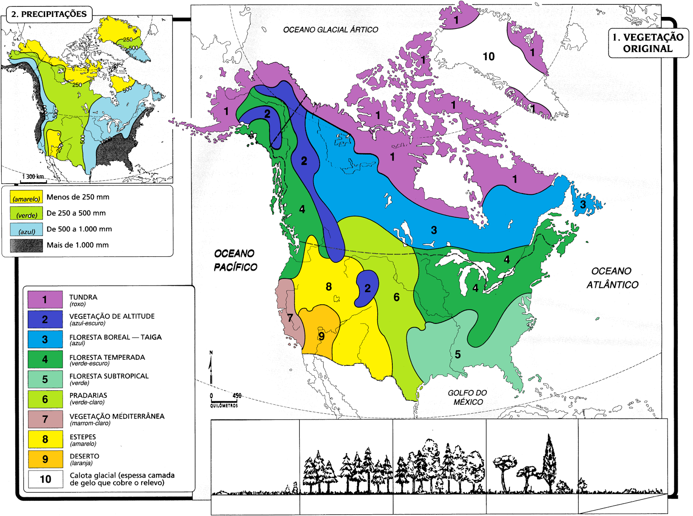
Floresta de Coníferas (Taiga)
Floresta de coníferas (pinheiros, abetos, cedros) que cobre o sul do Canadá e norte dos EUA. As árvores têm folhas em forma de agulha para suportar o frio intenso e neve.
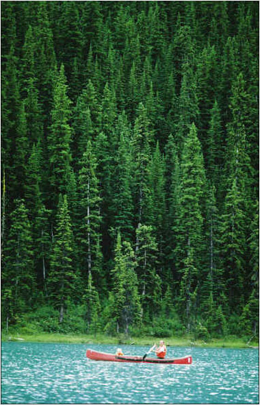
Pradarias
Grandes extensões de gramíneas nas planícies centrais. Foram amplamente convertidas em terras agrícolas — EUA e Canadá são grandes produtores de trigo, milho e soja graças às pradarias.
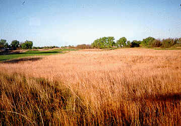
Estepes
Vegetação rasteira adaptada ao clima semiárido do centro-oeste dos EUA. Menos úmida que as pradarias, com gramíneas mais rígidas e arbustos esparsos.
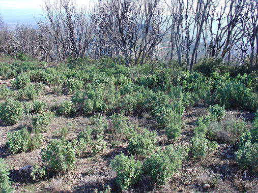
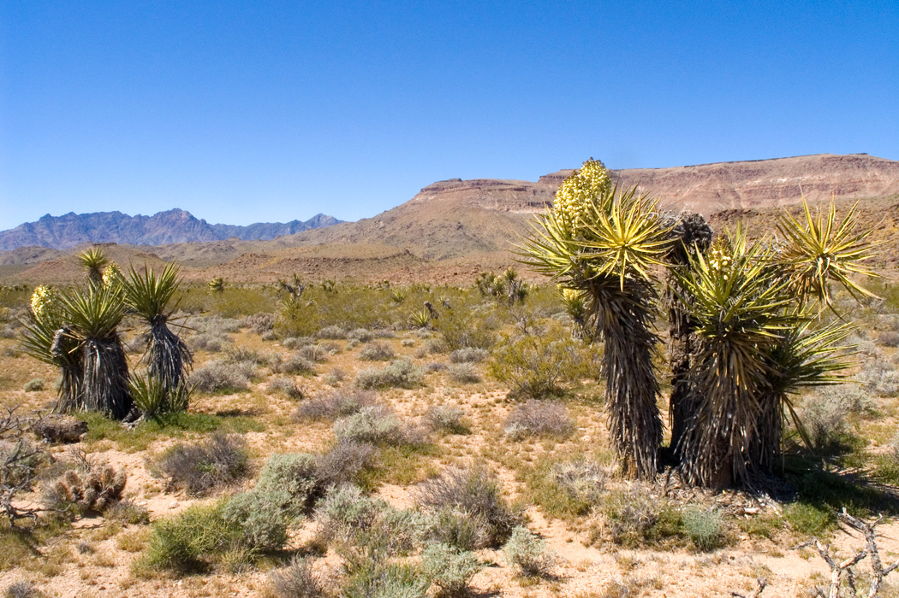
Clima Subtropical (Flórida)
O sudeste dos EUA, especialmente a Flórida, tem clima subtropical com verões quentes e úmidos. Vegetação de floresta subtropical com manguezais no litoral.
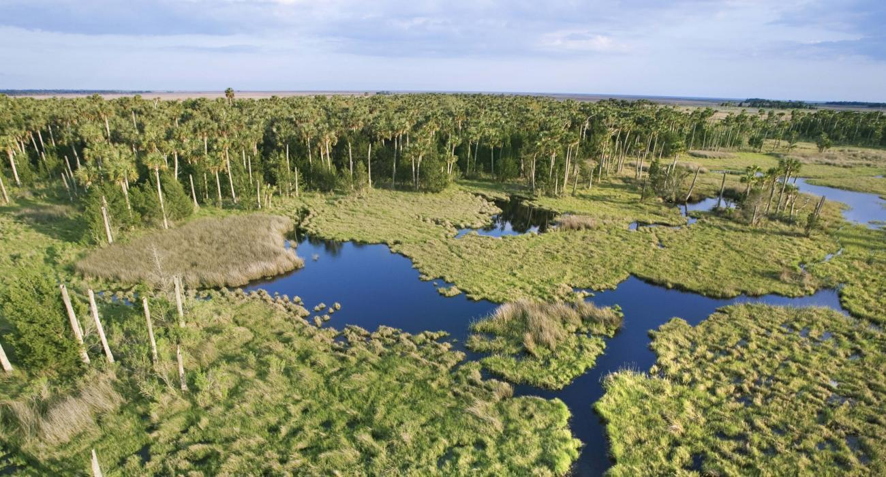
Clima de Montanha
Nas Montanhas Rochosas, o clima varia com a altitude — base com floresta temperada, meio com coníferas, cume com neve permanente e vegetação alpina.
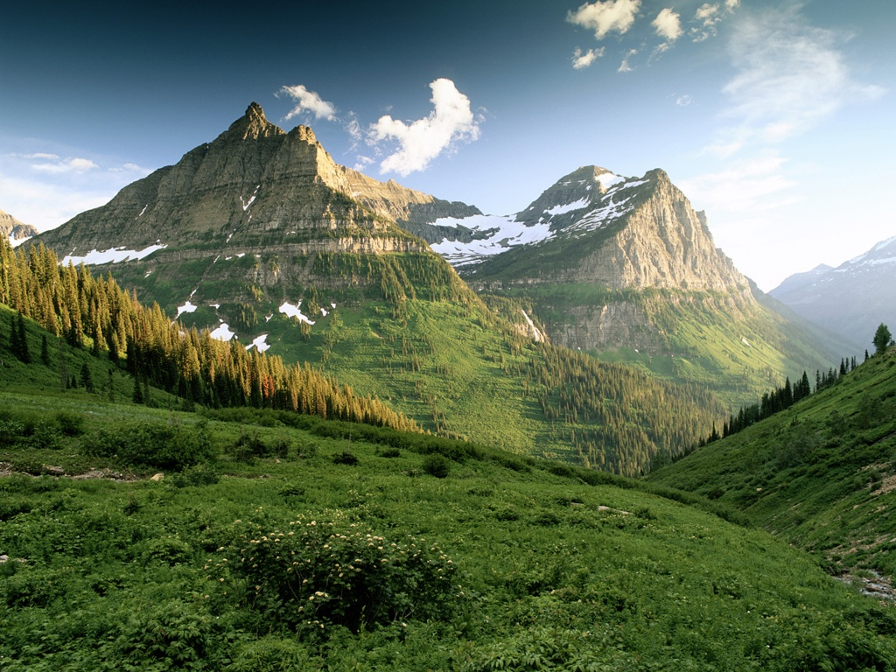
Clima Mediterrâneo (Califórnia)
A Califórnia tem verões secos e quentes, invernos suaves e chuvosos. A vegetação típica é o Chaparral (arbusto mediterrâneo), adaptado à seca de verão.
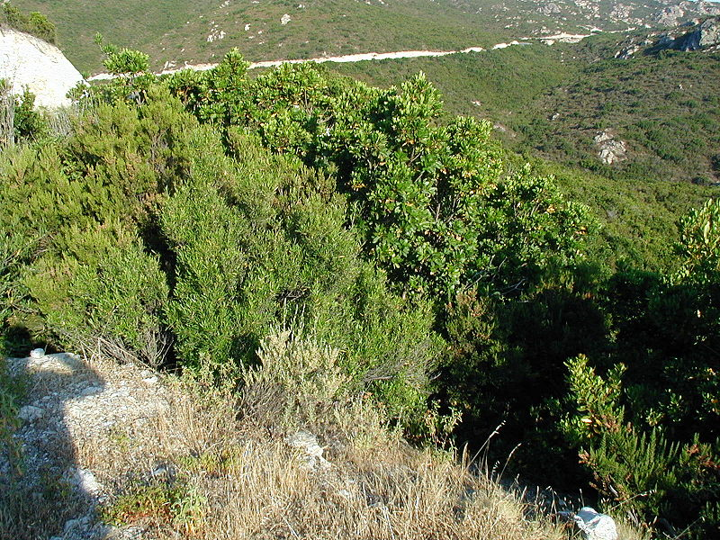
Hidrografia da América do Norte
| Rio | Características | Importância |
|---|---|---|
| Mississipi-Missouri | O maior sistema fluvial da América do Norte. Nasce nas Rochosas (Missouri) e nos Grandes Lagos (Mississipi), desemboca no Golfo do México. | Principal via de transporte fluvial dos EUA; bacia agrícola fundamental. |
| Rio Colorado | Nasce nas Rochosas, atravessa o sudoeste árido dos EUA e deságua no Golfo da Califórnia (México). | Esculpiu o Grand Canyon no Arizona. Abastece água para Las Vegas, Los Angeles e cidades do sudoeste. |
| Rio Grande (Rio Bravo) | Nasce no Colorado, separa os EUA do México até o Golfo do México. | Fronteira natural EUA-México. Importância geopolítica e hidrográfica. |
| Rio São Lourenço | Liga os Grandes Lagos ao Oceano Atlântico. Importante via de navegação. | Escoa a produção industrial da região dos Grandes Lagos para os portos do Atlântico. |
| Rio Mackenzie | O maior rio do Canadá, drena para o Oceano Ártico. | Bacia hidrográfica ártica do Canadá. |
Os Grandes Lagos formam o maior sistema de água doce superficial do mundo, localizados na fronteira entre EUA e Canadá (exceto o Lago Michigan, inteiramente nos EUA).
| Lago | Destaque |
|---|---|
| Superior | O maior em área de todo o hemisfério ocidental |
| Huron | Segundo maior; conectado ao Michigan pelo Estreito de Mackinac |
| Michigan | Único inteiramente em território americano |
| Erie | O mais raso; borda as Cataratas do Niágara |
| Ontario | O menor em área; escoa para o Rio São Lourenço |
Quiz de Revisão
Teste seus conhecimentos sobre União Europeia e América do Norte.